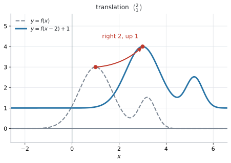
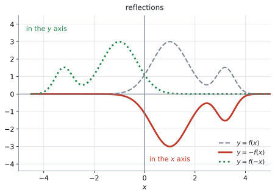
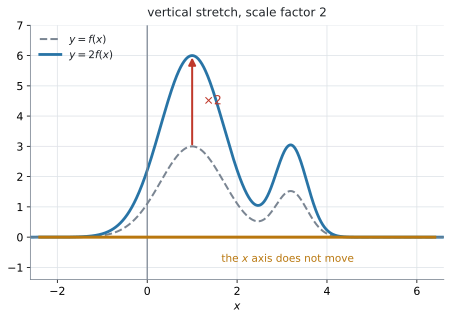
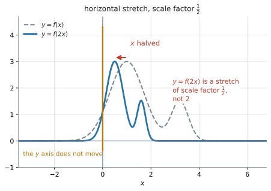
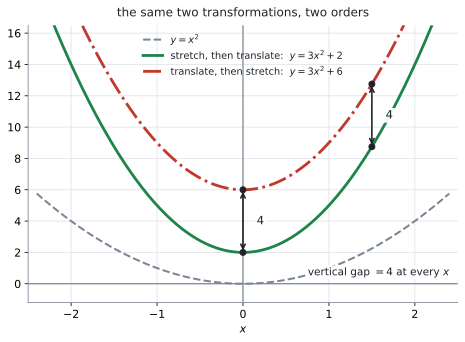
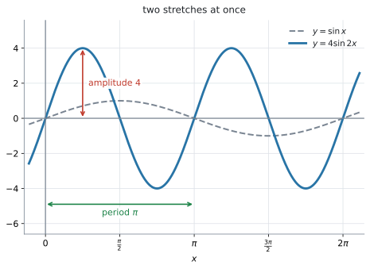

AHL 2.8 — Transformations of graphs（グラフの変換）
- translation（平行移動）\(y = f(x)+b\)、\(y = f(x-a)\) を、向きを間違えずに書ける。
- reflection（対称移動）\(y = -f(x)\) と \(y = f(-x)\) を見分けられる。
- vertical stretch（縦の拡大）\(y = pf(x)\) と horizontal stretch（横の拡大）\(y = f(qx)\) を書き、\(y = f(qx)\) の scale factor が \(\dfrac{1}{q}\) であることを説明できる。
- 係数が負のときは、scale factor を \(\lvert p \rvert\) や \(\dfrac{1}{\lvert q \rvert}\) とし、reflection と組み合わせて説明できる。
- \(y = f(x)\) 上の点が、変換後にどこへ行くかを求められる。
- composite transformation（合成変換）の式を作り、順序を変えると結果が変わる場合を示せる。
The idea
1. transformation は「グラフを動かすこと」です
\(y = f(x)\) のグラフがあるとき、その式を少し書きかえると、グラフは形を保ったまま動いたり、伸びたり、裏返ったりします。これを transformation（変換）といいます。
シラバスが扱うのは、translation（平行移動）、reflection（対称移動）、vertical stretch（縦の拡大）、horizontal stretch（横の拡大）の \(4\) 種類と、その組み合わせです。次の節から \(1\) つずつ見ます。
どの図でも、灰色の点線がもとの \(y = f(x)\)、青や赤の線が変換したあとの image（像）です。
大事なのは、\(f\) が何なのかを知らなくてもよいことです。\(f(x) = x^2\) でも \(f(x) = \sin x\) でも \(f(x) = 2^x\) でも、\(y = f(x)+3\) は「上に \(3\)」です（例 1 は \(x^3-2x\)、例 2 は \(2^x+1\) で、同じ操作をしています）。
2. translation ── 縦は外に足し、横は中から引きます
\[ y = f(x) + b \quad \text{は、上に } b \tag{1}\]
\[ y = f(x - a) \quad \text{は、右に } a \tag{2}\]

図 1 が、その両方を一度にやった例です。\(y = f(x-2)+1\) は、右に \(2\)、上に \(1\) 動かしたものです。もとのグラフの山の頂上 \((1,\ 3)\) が \((3,\ 4)\) に移っています。
\(2\) つをまとめて、vector（ベクトル）の形で書きます。
\[ \begin{pmatrix} a \\ b \end{pmatrix} \quad \text{だけ平行移動する} \]
Guidance が例を挙げています。
Translation by the vector \(\begin{pmatrix} 3 \\ -2 \end{pmatrix}\) denotes horizontal translation of \(3\) units to the right, and vertical translation of \(2\) units down.
つまり \(\begin{pmatrix} 3 \\ -2 \end{pmatrix}\) は「右に \(3\)、下に \(2\)」で、式は \(y = f(x-3)-2\) です。
ここが、この項目でいちばん間違えるところです。引いてあるのに右に動くからです。
\(f(x) = x^2\) で確かめます。\(y = f(x-3) = (x-3)^2\) の頂点は \(x = 3\) です。もとの \(y = x^2\) の頂点は \(x = 0\) でしたから、たしかに右に \(3\) 動いています。
理由は Why it works で説明します。いまは、\(1\) つ例で確かめる習慣を付けてください。\(f(x) = x^2\) なら \(5\) 秒で確かめられます。
3. reflection ── \(-\) を外に付けるか、中に付けるか
\[ y = -f(x) \quad \text{は、} x \text{ 軸についての対称移動} \tag{3}\]
\[ y = f(-x) \quad \text{は、} y \text{ 軸についての対称移動} \tag{4}\]

図 2 の赤い実線が \(y = -f(x)\) で、上下がひっくり返っています。緑の点線が \(y = f(-x)\) で、左右がひっくり返っています。
- \(-\) が \(f\) の外 … \(y\) の値の符号が変わる → 上下が変わる → \(x\) 軸が鏡
- \(-\) が \(f\) の中 … \(x\) の値の符号が変わる → 左右が変わる → \(y\) 軸が鏡
「\(x\) 軸についての対称移動」なのに式は \(-f(x)\)、「\(y\) 軸についての対称移動」なのに式は \(f(-x)\)——軸の名前と、式に出てくる文字が逆になります。ここは覚えるしかありません。
4. vertical stretch ── \(y = pf(x)\)
\[ y = p\,f(x) \quad \text{は、vertical stretch with scale factor } p \qquad (p > 0) \tag{5}\]
式 5 の \(p\) を scale factor（拡大率）といいます。scale factor は正の大きさとして書きます。

図 3 が \(p = 2\) の場合で、山の高さが \(3\) から \(6\) になっています。
\(y\) 座標だけが \(p\) 倍になり、\(x\) 座標は変わりません。 ですから
\[ (x,\ y) \ \longmapsto \ (x,\ py) \]
です。\(y = 0\) の点は \(p\) をかけても \(0\) のままなので、\(x\) 軸の上の点は動きません。 Guidance の x and y axes are invariant. は、\(2\) つの stretch についての注意です。vertical stretch では \(x\) 軸の上の点が、horizontal stretch では \(y\) 軸の上の点が動きません（第5節）。invariant（不変な）は「動かない」という意味です。
\(0 < p < 1\) なら縮み、\(p > 1\) なら伸びます。「拡大率」という日本語につられて、\(1\) より大きい数だと決めつけないでください。
\(p < 0\) のときは、\(1\) つの変換ではありません。 \(x\) 軸についての reflection と、scale factor \(\lvert p \rvert\) の vertical stretch を組み合わせたものです。たとえば \(y = -3f(x)\) は、\(x\) 軸について折り返してから、縦に scale factor \(3\) で拡大したものです。\(p = -3\) なら、裏返って \(3\) 倍です。縮みません。
scale factor は \(\lvert p \rvert\) であって、\(-3\) ではありません。 Describe the transformation と問われたら、折り返しと拡大の \(2\) つを書いてください。
5. horizontal stretch ── \(y = f(qx)\) の scale factor は \(\dfrac{1}{q}\) です
\[ y = f(qx) \quad \text{は、横に } \frac{1}{q} \text{ 倍} \qquad (q > 0) \tag{6}\]
\(q < 0\) のときは、scale factor \(\dfrac{1}{\lvert q \rvert}\) の horizontal stretch に加えて、\(y\) 軸についての対称移動が起こります。\(y = f(-x)\) が、そのいちばん簡単な場合です（第3節）。\(q = 0\) では \(y = f(0)\) という水平な直線につぶれてしまうので、変換になりません。
シラバスも、この形で書いています。
Horizontal stretch with scale factor \(\dfrac{1}{q}\): \(y = f(qx)\)

式 6 で \(q = 2\) としたものが、図 4 です。\(y = f(2x)\) は、横に \(\dfrac{1}{2}\) 倍——つまり半分に縮んでいます。山の頂上は \(x = 1\) から \(x = 0.5\) に移りました。
\[ (x,\ y) \ \longmapsto \ \left(\frac{x}{q},\ y\right) \]
\(x = 0\) の点は \(\dfrac{1}{q}\) をかけても \(0\) のままなので、\(y\) 軸の上の点は動きません（第4節）。
\(y = f(2x)\) と書いてあると、\(2\) 倍に広がりそうに見えます。逆です。半分に縮みます。
\(f(x) = \sin x\) で確かめてください。\(\sin x\) の周期は \(2\pi\) ですが、\(\sin 2x\) の周期は \(\pi\) です。\(1\) 周が短くなっています（図 6）。
Describe the transformation と問われたら、答えは「horizontal stretch with scale factor \(\dfrac{1}{2}\)」です。「scale factor \(2\)」と書くと違う変換になります。
6. 「外は見たまま、中は逆」
\(4\) つを、\(1\) つの表にまとめます。\(f\) の外にあるか、中にあるかで、性格がはっきり分かれます。
| 式 | どこ | 何が変わるか | 動き | 動かない点 |
|---|---|---|---|---|
| \(y = f(x)+b\) | 外 | \(y\) 座標 | 上に \(b\) | なし |
| \(y = -f(x)\) | 外 | \(y\) 座標 | \(x\) 軸で折り返し | \(x\) 軸の上 |
| \(y = p\,f(x)\) | 外 | \(y\) 座標 | \(y\) 座標を \(p\) 倍する。\(p<0\) なら reflection も起こり、stretch の scale factor は \(\lvert p \rvert\) | \(x\) 軸の上 |
| \(y = f(x-a)\) | 中 | \(x\) 座標 | 右に \(a\) | なし |
| \(y = f(-x)\) | 中 | \(x\) 座標 | \(y\) 軸で折り返し | \(y\) 軸の上 |
| \(y = f(qx)\) | 中 | \(x\) 座標 | 横に \(\dfrac{1}{q}\) 倍 | \(y\) 軸の上 |
読み方は、次の \(1\) 行です。
\(f\) の外の操作は、書いてあるとおりに \(y\) に起こる。\(f\) の中の操作は、\(x\) に逆向きに起こる。
- 外の \(+b\) … \(y\) が \(b\) 増える（見たまま）
- 中の \(-a\) … \(x\) が \(a\) 増える（逆）
- 外の \(\times p\) … \(y\) が \(p\) 倍（見たまま）
- 中の \(\times q\) … \(x\) が \(\dfrac{1}{q}\) 倍（逆）
\((x,\ y)\) がどこへ行くかを書けば、迷いません。
\[ y = 3f(x-2) \ \Longrightarrow \ (x,\ y) \longmapsto (x+2,\ 3y) \]
\(x\) には逆の操作、\(y\) には見たままの操作です。\(y = f(x)\) 上の点 \((4,\ 5)\) は、\((6,\ 15)\) に移ります。
7. composite transformation ── 順序が結果を変えます
\(2\) つ以上の変換を続けて行うことを composite transformation（合成変換）といいます。Guidance が、わざわざ注意しています。
Students should be made aware of the significance of the order of transformations.
シラバスの \(1\) つ目の Example を見ます。
Example: \(y = x^2\) used to obtain \(y = 3x^2+2\) by a vertical stretch of scale factor \(3\) followed by a translation of \(\begin{pmatrix} 0 \\ 2 \end{pmatrix}\).
縦に \(3\) 倍してから、上に \(2\)（a vertical stretch by \(3\), followed by a shift up \(2\)）です。順に書くと
\[ x^2 \ \xrightarrow[\ \text{stretch by } 3\ ]{\ \text{縦に } 3 \text{ 倍}\ } \ 3x^2 \ \xrightarrow[\ \text{shift up } 2\ ]{\ \text{上に } 2\ } \ 3x^2+2 \]
順を入れかえると、どうなるでしょうか。上に \(2\) してから、縦に \(3\) 倍（a shift up \(2\), followed by a vertical stretch by \(3\)）します。
\[ x^2 \ \xrightarrow[\ \text{shift up } 2\ ]{\ \text{上に } 2\ } \ x^2+2 \ \xrightarrow[\ \text{stretch by } 3\ ]{\ \text{縦に } 3 \text{ 倍}\ } \ 3\left(x^2+2\right) = 3x^2+6 \]

図 5 が、その \(2\) 本です。\(3x^2+2\) と \(3x^2+6\) なので、同じ \(x\) でくらべると、\(y\) の値がつねに \(4\) だけちがいます。 上に動かした \(2\) も一緒に \(3\) 倍されてしまうからです。
見た目のすき間は、\(x\) が大きくなるほどせまく見えます。 ちがうのはあくまで縦の \(4\) で、\(2\) 本のグラフの間隔ではありません。どちらも急に立ち上がるので、\(x\) が \(0\) から離れるほど、\(2\) 本はくっついて見えます。同じ \(x\) のところで、縦にくらべてください。
\(y = 3f(x)+2\) という式を、内側から読んでください。
\[ f(x) \ \to \ 3f(x) \ \to \ 3f(x)+2 \]
\(f\) にくっついている \(\times 3\) が先、いちばん外の \(+2\) があとです。AHL 2.7 の合成関数と同じ、「内側が先」の読み方です（ただしこれは、\(f\) の外の操作についての話です。中の操作は、このすぐあとで扱います）。
中の操作は、そう単純ではありません。 \(f(2x-6)\) のように、\(x\) の係数と定数が、同じかっこの中に混ざっているからです。
このまま「横に \(\dfrac{1}{2}\) 倍して、右に \(6\)」と読むと、まちがえます。 そうならないために、かっこの中を \(q(x-a)\) の形に因数分解してから読みます。
\[ y = f\bigl(q(x-a)\bigr) \quad \text{は、横に } \frac{1}{q} \text{ 倍してから、右に } a \qquad (q > 0) \tag{7}\]
たとえば \(y = f(2x-6)\) なら、\(2x-6 = 2(x-3)\) なので、横に \(\dfrac{1}{2}\) 倍してから、右に \(3\)（a horizontal stretch by scale factor \(\tfrac{1}{2}\), followed by a shift right \(3\)）です。
同じ \(f(2x-6)\) を作る道すじは、\(2\) 通りあります。
- 右に \(6\) 動かしてから、横に \(\dfrac{1}{2}\) 倍（a shift right \(6\), followed by a horizontal stretch by scale factor \(\tfrac{1}{2}\)） … \(f(x) \to f(x-6) \to f(2x-6)\)
- 横に \(\dfrac{1}{2}\) 倍してから、右に \(3\)（a horizontal stretch by scale factor \(\tfrac{1}{2}\), followed by a shift right \(3\)） … \(f(x) \to f(2x) \to f\bigl(2(x-3)\bigr) = f(2x-6)\)
どちらも同じグラフで、どちらも正しい説明です（演習 \(7\)）。右に \(6\) 動かしてから半分に縮めれば、\(6\) にあった特徴が \(3\) に来るからです。
式だけを見て順序を答えるときは、式 7 のほうが速く済みます。かっこを因数分解して、\(q\) と \(a\) をそのまま読むだけだからです。
まちがいなのは、縮めてから右に \(6\)（a horizontal stretch by scale factor \(\tfrac{1}{2}\), followed by a shift right \(6\)）です。これは \(f\bigl(2(x-6)\bigr) = f(2x-12)\) で、別のグラフになります（演習 \(7\) の (b)）。
\(2\) つ目の Example は、順序が問題にならない場合です。
Example: \(y = \sin x\) used to obtain \(y = 4\sin 2x\) by a vertical stretch of scale factor \(4\) and a horizontal stretch of scale factor \(\dfrac{1}{2}\).
縦の拡大と横の拡大は、片方が \(y\) だけ、もう片方が \(x\) だけを動かします。 ぶつからないので、どちらが先でも \(4\sin 2x\) です。Guidance がここだけ followed by を使わず and で並べているのは、そのためだと読めます。

図 6 が、その結果です。amplitude（振幅）が \(4\)、period（周期）が \(\pi\) になっています。
Why it works
なぜ \(f\) の中をいじると、\(x\) が逆向きに動くのか。 ここだけ説明します。
\(y = f(x-3)\) のグラフを考えます。このグラフの上の点を \((X,\ Y)\) とすると
\[ Y = f(X-3) \]
です。いっぽう、もとのグラフ \(y = f(x)\) の上の点は \((t,\ f(t))\) の形をしています。
この \(2\) つを見くらべます。 \(X - 3 = t\) のとき、\(Y = f(t)\) になります。つまり、もとのグラフの点 \((t,\ f(t))\) とちょうど同じ高さの点が、新しいグラフでは
\[ X = t + 3 \]
のところに現れます。高さは同じままで、\(x\) 座標だけが \(3\) 増える——これが「右に \(3\)」です。
\[ (t,\ f(t)) \ \longmapsto \ (t+3,\ f(t)) \]
引いたのに右に動くのは、「\(f\) に \(t\) を食べさせるために、\(X\) を \(3\) 多く用意しなければならない」からです。中の操作は、\(x\) が「補う」形で効きます。
横の拡大も同じです。\(y = f(qx)\) の上の点 \((X,\ Y)\) で \(qX = t\) とすると
\[ X = \frac{t}{q} \]
なので、\(x\) 座標が \(\dfrac{1}{q}\) 倍になります。\(q = 2\) なら半分です。
外の操作には、この「補う」動きがありません。\(y = f(x)+3\) では \(x\) をそのまま \(f\) に入れて、出てきた値に \(3\) を足すだけです。だから \(y\) が見たまま \(3\) 増えます。
\[ (t,\ f(t)) \ \longmapsto \ (t,\ f(t)+3) \]
式 7 の順序も、これで説明できます。 \(y = f\bigl(q(x-a)\bigr)\) で \(q(X-a) = t\) とすると
\[ X = \frac{t}{q} + a \]
です。\(t\) に対してまず \(\dfrac{1}{q}\) 倍し、そのあと \(a\) を足しています。だから「横に \(\dfrac{1}{q}\) 倍してから、右に \(a\)」の順です。
Worked examples
問題文は英語です。意味が理解できなかったら、問題文の下の「日本語訳」を開いてください。解説は日本語です。
例題 1 Let \(f(x) = x^{3}-2x\).
(a) Write down the equation of the graph of \(y = f(x)\) after a translation of \(\begin{pmatrix} 0 \\ 3 \end{pmatrix}\).
(b) Find, in expanded form, the equation of the graph of \(y = f(x)\) after a translation of \(\begin{pmatrix} 2 \\ 0 \end{pmatrix}\).
(c) The point \((1,\ -1)\) lies on \(y = f(x)\). Find its image under the translation in part (b).
日本語訳
\(f(x) = x^{3}-2x\) とします。
(a) \(y = f(x)\) のグラフを \(\begin{pmatrix} 0 \\ 3 \end{pmatrix}\) だけ平行移動したあとの式を書きなさい。
(b) \(y = f(x)\) のグラフを \(\begin{pmatrix} 2 \\ 0 \end{pmatrix}\) だけ平行移動したあとの式を、展開した形で求めなさい。
(c) 点 \((1,\ -1)\) は \(y = f(x)\) の上にあります。(b) の平行移動による、この点の像を求めなさい。
(a) \(\begin{pmatrix} 0 \\ 3 \end{pmatrix}\) は「横に \(0\)、上に \(3\)」です。縦の移動は外に足します（式 1）。
\[ y = x^{3}-2x+3 \]
(b) \(\begin{pmatrix} 2 \\ 0 \end{pmatrix}\) は「右に \(2\)」です。横の移動は中から引きます（式 2）。
\[ y = f(x-2) = (x-2)^{3} - 2(x-2) \]
展開します。\((x-2)^{3} = x^{3}-6x^{2}+12x-8\) ですから
\[ y = x^{3}-6x^{2}+12x-8-2x+4 = x^{3}-6x^{2}+10x-4 \]
\(x\) を \(x-2\) に置きかえるのは、\(f(x)\) の \(x\) が出てくるところ全部です。\(1\) か所だけ置きかえる誤りに注意してください。
(c) 右に \(2\) 動くので、\(x\) 座標だけが \(2\) 増えます。
\[ (1,\ -1) \ \longmapsto \ (3,\ -1) \]
検算。 (b) の式に \(x = 3\) を入れます。\(27 - 54 + 30 - 4 = -1\) ✓ たしかに \((3,\ -1)\) を通ります。
(a) \[y = x^{3}-2x+3\]
(b) \[y = (x-2)^{3}-2(x-2) = x^{3}-6x^{2}+10x-4\]
(c) \[(3,\ -1)\]
例題 2 Let \(f(x) = 2^{x}+1\).
(a) Write down the equation of \(y = -f(x)\) and the equation of \(y = f(-x)\).
(b) The graph of \(y = f(x)\) has a horizontal asymptote at \(y = 1\). State the horizontal asymptote of each graph in part (a).
(c) The point \((2,\ 5)\) lies on \(y = f(x)\). Find its image on each graph in part (a).
日本語訳
\(f(x) = 2^{x}+1\) とします。
(a) \(y = -f(x)\) の式と、\(y = f(-x)\) の式を書きなさい。
(b) \(y = f(x)\) のグラフは \(y = 1\) に horizontal asymptote（水平漸近線）をもちます。(a) のそれぞれのグラフの horizontal asymptote を述べなさい。
(c) 点 \((2,\ 5)\) は \(y = f(x)\) の上にあります。(a) のそれぞれのグラフ上での、この点の像を求めなさい。
(a) \(-\) を外に付けるか、中に付けるかです（第3節）。
\[ y = -f(x) = -\left(2^{x}+1\right) = -2^{x}-1 \]
\[ y = f(-x) = 2^{-x}+1 \]
外に付けるときは、かっこを忘れないでください。 \(-2^{x}+1\) と書くと、\(+1\) の符号を変え損ねています。
(b) asymptote（漸近線）も、グラフの一部として一緒に動きます。
- \(y = -f(x)\) … \(x\) 軸で折り返すので、\(y = 1\) は \(y = -1\) になります
- \(y = f(-x)\) … \(y\) 軸で折り返しても高さは変わらないので、\(y = 1\) のままです（ただし、グラフが近づいていく向きは左右が入れかわります）
(c) 点の追い方は 第6節 のとおりです。
- \(y = -f(x)\) … \(y\) の符号だけ変わる → \((2,\ -5)\)
- \(y = f(-x)\) … \(x\) の符号だけ変わる → \((-2,\ 5)\)
検算。 \(y = -f(x) = -2^{x}-1\) に \(x = 2\) を入れると \(-4-1 = -5\) ✓（\(-2^{x}+1\) と書いていれば \(-3\) になるので、ここで気づけます）
\(y = f(-x) = 2^{-x}+1\) に \(x = -2\) を入れると \(2^{2}+1 = 5\) ✓
(a) \[y = -f(x) = -2^{x}-1, \qquad y = f(-x) = 2^{-x}+1\]
(b) For \(y = -f(x)\): \(y = -1\). For \(y = f(-x)\): \(y = 1\).
(c) \[(2,\ -5) \text{ and } (-2,\ 5)\]
例題 3 The graph of \(y = x^{2}\) is transformed by a vertical stretch with scale factor \(3\), followed by a translation of \(\begin{pmatrix} 0 \\ 2 \end{pmatrix}\).
(a) Find the equation of the resulting graph.
(b) Find the equation that results when the same two transformations are applied in the opposite order.
(c) Explain why the two orders give different graphs.
日本語訳
\(y = x^{2}\) のグラフに、scale factor \(3\) の vertical stretch を行い、続いて \(\begin{pmatrix} 0 \\ 2 \end{pmatrix}\) の平行移動を行います。
(a) できあがるグラフの式を求めなさい。
(b) 同じ \(2\) つの変換を逆の順で行ったときにできる式を求めなさい。
(c) \(2\) つの順序で違うグラフになる理由を説明しなさい。
(a) 順に書きます。
\[ x^{2} \ \xrightarrow[\ \text{stretch by } 3\ ]{\ \text{縦に } 3 \text{ 倍}\ } \ 3x^{2} \ \xrightarrow[\ \text{shift up } 2\ ]{\ \text{上に } 2\ } \ 3x^{2}+2 \]
\[ y = 3x^{2}+2 \]
シラバスの Example と同じ式になりました。
(b) 逆の順です。先に上に \(2\)、そのあとで全体を \(3\) 倍します。
\[ x^{2} \ \xrightarrow[\ \text{shift up } 2\ ]{\ \text{上に } 2\ } \ x^{2}+2 \ \xrightarrow[\ \text{stretch by } 3\ ]{\ \text{縦に } 3 \text{ 倍}\ } \ 3\left(x^{2}+2\right) = 3x^{2}+6 \]
\[ y = 3x^{2}+6 \]
かっこを付けてから展開するのが確実です。\(x^{2}+2\) を \(3\) 倍するのですから、\(+2\) も \(3\) 倍されます。
(c) Explain why なので、英語で理由を書きます。数を \(1\) 組出すと短く済みます。
同じ \(x\) での縦の差は \(3x^{2}+6-\left(3x^{2}+2\right) = 4\) で、\(x\) によりません（図 5）。この \(4\) は、上に動かした \(2\) が余分に \(3\) 倍された分です。
\[ 3 \times 2 - 2 = 6 - 2 = 4 \]
試験ではこう書く
Stretching first gives \(y = 3x^{2}+2\), but translating first gives \(y = 3\left(x^{2}+2\right) = 3x^{2}+6\). The two differ by \(4\) for every value of \(x\). When the translation is done first, the \(2\) that was added is itself multiplied by the scale factor \(3\), giving \(6\) instead of \(2\). The vertical stretch and the vertical translation both change the \(y\) coordinate, so the order in which they are applied matters.
（先に拡大すると \(y = 3x^2+2\) になるが、先に平行移動すると \(3(x^2+2) = 3x^2+6\) になる。どの \(x\) でも \(4\) だけ違う。平行移動を先にすると、足した \(2\) そのものが scale factor \(3\) で \(3\) 倍され、\(2\) ではなく \(6\) になるからである。vertical stretch も vertical translation も \(y\) 座標を変えるので、順序が結果に効く、という意味です。）
(a) \[y = 3x^{2}+2\]
(b) \[y = 3\left(x^{2}+2\right) = 3x^{2}+6\]
(c) Both transformations change the \(y\) coordinate. If the translation is applied first, the \(+2\) is also multiplied by \(3\), giving \(3x^{2}+6\) instead of \(3x^{2}+2\). The two graphs differ by \(4\) for every \(x\).
例題 4 The graph of \(y = \sin x\) is transformed into the graph of \(y = 4\sin 2x\).
(a) Describe fully the two transformations involved.
(b) Write down the amplitude and the period of \(y = 4\sin 2x\).
(c) The point \(\left(\dfrac{\pi}{2},\ 1\right)\) lies on \(y = \sin x\). Find its image on \(y = 4\sin 2x\).
日本語訳
\(y = \sin x\) のグラフが、\(y = 4\sin 2x\) のグラフに変換されます。
(a) 関係している \(2\) つの変換を、完全に述べなさい。
(b) \(y = 4\sin 2x\) の amplitude と period を書きなさい。
(c) 点 \(\left(\dfrac{\pi}{2},\ 1\right)\) は \(y = \sin x\) の上にあります。\(y = 4\sin 2x\) 上での、この点の像を求めなさい。
(a) Describe fully は、変換の名前と scale factor の両方を求めています。
- 外の \(4\) … vertical stretch, scale factor \(4\)
- 中の \(2\) … horizontal stretch, scale factor \(\dfrac{1}{2}\)
中の \(2\) を「scale factor \(2\)」と書かないでください（第5節）。
試験ではこう書く
A vertical stretch with scale factor \(4\) (the \(x\) axis is invariant), together with a horizontal stretch with scale factor \(\dfrac{1}{2}\) (the \(y\) axis is invariant). The two stretches change different coordinates, so they may be applied in either order.
（scale factor \(4\) の vertical stretch（\(x\) 軸は動かない）と、scale factor \(\frac{1}{2}\) の horizontal stretch（\(y\) 軸は動かない）である。\(2\) つの拡大は別々の座標を変えるので、どちらの順で行ってもよい、という意味です。）
(b) SL 2.5 の読み方がそのまま使えます。
- amplitude … 外の係数なので \(4\)
- period … \(\dfrac{2\pi}{2} = \pi\)
図 6 で、山の高さが \(4\)、\(1\) 周の長さが \(\pi\) になっていることを確かめてください。
(c) \(x\) 座標は \(\dfrac{1}{2}\) 倍、\(y\) 座標は \(4\) 倍です。
\[ \left(\frac{\pi}{2},\ 1\right) \ \longmapsto \ \left(\frac{\pi}{4},\ 4\right) \]
検算。 \(4\sin\left(2 \times \dfrac{\pi}{4}\right) = 4\sin\dfrac{\pi}{2} = 4\) ✓ 合いました。
(a) A vertical stretch with scale factor \(4\), and a horizontal stretch with scale factor \(\dfrac{1}{2}\).
(b) Amplitude \(4\); period \(\dfrac{2\pi}{2} = \pi\).
(c) \[\left(\frac{\pi}{4},\ 4\right)\]
Common errors
\(-a\) と書いてあるので左に見えますが、右に \(a\) です。
\[ y = (x-3)^{2} \ \text{の頂点は} \ x = 3 \]
\(f(x) = x^2\) で \(1\) 回確かめる——これを毎回やってください（第2節）。理由は Why it works にあります。
\(y = f(2x)\) は scale factor \(\tfrac{1}{2}\) の horizontal stretch です。\(2\) ではありません。
Describe the transformation で \(\dfrac{1}{q}\) と書けていなければ、その部分は別の変換の説明になります。
\(\sin x\) の周期 \(2\pi\) が、\(\sin 2x\) では \(\pi\) に短くなる——この \(1\) 例を覚えておけば、向きを取りちがえません（第5節）。
\(f(x) = 2^{x}+1\) のとき
\[ -f(x) = -\left(2^{x}+1\right) = -2^{x}-1 \]
です。\(-2^{x}+1\) は誤りです。\(f\) の全部に \(-\) が掛かります。
\(y = 3f(x)\) でも同じで、\(f(x) = x^2+5\) なら \(3x^2+15\) です。\(3x^2+5\) ではありません。
指数関数や有理関数では、asymptote もグラフの一部です。
\(y = 2^{x}\) の asymptote は \(y = 0\) ですが、\(y = 2^{x}+1\) では \(y = 1\)、\(y = -2^{x}\) では \(y = 0\) のまま、\(y = 3 \cdot 2^{x} + 1\) では \(y = 1\) です。
縦の拡大は \(y = 0\) を動かしませんが、縦の平行移動は動かします（例 2）。
Using your GDC (TI-Nspire CX II)
1. もとの関数に名前を付けてから、変換を書く
ctrl + doc → Add Graphs入力欄に、もとの関数と、変換したものを並べて入れます。
- \(f1(x) = x^{2}\)
- \(f2(x) = 3 \times f1(x) + 2\)
\(2\) 行目で \(1\) 行目を使えます。 \(f1\) を書きかえれば \(f2\) も一緒に変わるので、「\(f\) が何であっても同じ動きをする」ことがそのまま確かめられます。
\(1\) 行目を f1(x)=sin(x) や \(f1(x) = 2^{x}\) に打ちかえて、同じ \(f2\) がどう動くか見てください。
2. スライダーで、scale factor を動かす
Graphs ページで、変数を動かすつまみを置けます。TI 公式のヘルプでは、Graphs・Geometry・Data & Statistics のページで
menu → Actions → Insert Sliderと説明されています。変数名を p として
f2(x)=p*f1(x)と入れると、\(p\) を動かしながらグラフの伸び縮みが見えます。\(p\) を \(0\) と \(1\) のあいだにすると縮み、\(1\) より大きくすると伸び、負にすると裏返ることが、その場で確かめられます（第4節）。
f2(x)=f1(q*x) にすれば、横の拡大が見えます。\(q\) を正の範囲で大きくするほど細くなります（scale factor が \(\dfrac{1}{q}\) だからです）。\(q\) を負にすると \(y\) 軸について裏返り、\(q = 0\) ではグラフが水平な直線につぶれます。スライダーの初めの範囲には負の数と \(0\) が入っているので、そこも一度動かしてみてください。第5節 の落とし穴は、これを \(1\) 回見ておくのがいちばん早い対策です。
3. 点の像を、数で確かめる
Graphs と同じ problem の中の Calculator ページで、\(f1\) と \(f2\) の値を比べます。自分が手で出した像の座標と、電卓の値を突き合わせるための節です。
f1(2)
f2(2)\(y = 3f(x)+2\) なら、\(f2(2)\) は \(3 \times f1(2) + 2\) になります。手で出した像の \(y\) 座標と、この数が合うかを見てください。
横の変換は、入れる \(x\) のほうを変えて確かめます。Graphs ページで
f2(x)=f1(2*x)と入れなおしてから、Calculator ページで
f1(4)
f2(2)を比べます。同じ値になれば、もとの \(x = 4\) の点が、新しいグラフでは \(x = 2\) にあるということです。
グラフを見て「縮んだ」ことは分かりますが、それが \(\dfrac{1}{2}\) 倍なのか \(\dfrac{1}{3}\) 倍なのかは、目では決まりません。
Describe the transformation の答えは、式から読むものです（表 1）。電卓は、読み取った答えが正しいかを見るために使ってください。
4. 検算のしかた
- 点を \(1\) つ選んで追う。 もとのグラフの分かりやすい点（頂点、切片、山の頂上）が、どこへ行くかを式と見くらべる
- \(f1\) を別の関数に取りかえてみる。 同じ変換なら、同じ動き方をするはずです
- 合成のときは、\(2\) つの順序で \(2\) 本かいて重ねる。 重ならなければ、順序が効いています（図 5）
- 三角関数なら、周期と振幅を画面で読む。 \(4\sin 2x\) なら、\(4\) と \(\pi\) です
\(1\) つ目がいちばん確実です。点が合っていれば、向きも scale factor も合っています。
Exercises
各問題に、折りたたみが3つ付いています。日本語訳、解答例（答案用紙に書くべきこと。英語です）、解説（なぜそうなるか。日本語です）。
まず自分で解いて、次に解答例と見くらべてください。解説は、合わなかったときだけ開けば十分です。
1 Let \(f(x) = x^{2}+1\). Write down the equation of \(y = f(x)-3\), and find, in expanded form, the equation of \(y = f(x+4)\).
日本語訳
\(f(x) = x^{2}+1\) とします。\(y = f(x)-3\) の式を書き、\(y = f(x+4)\) の式を展開した形で求めなさい。
\[y = f(x)-3 = x^{2}-2\]
\[y = f(x+4) = (x+4)^{2}+1 = x^{2}+8x+17\]
\(1\) つ目は外の操作なので、そのまま \(3\) 引くだけです（表 1）。
\(2\) つ目は中の操作です。\(f(x+4) = f\bigl(x-(-4)\bigr)\) なので 左に \(4\) です。右ではありません（第2節）。
\(f\) の \(x\) を全部 \(x+4\) に置きかえます。\(f(x) = x^2+1\) の \(x\) は \(1\) か所だけなので、\((x+4)^2+1\) です。
検算。 もとの頂点は \((0,\ 1)\)。左に \(4\) なので、新しい頂点は \((-4,\ 1)\) のはずです。\(x = -4\) を入れると \(16-32+17 = 1\) ✓
2 The graph of \(y = f(x)\) is transformed into the graph of \(y = f(x-5)+2\). Describe fully the transformation.
日本語訳
\(y = f(x)\) のグラフが \(y = f(x-5)+2\) のグラフに変換されます。この変換を完全に述べなさい。
A translation of \(5\) units to the right and \(2\) units up, that is, a translation by the vector \(\begin{pmatrix} 5 \\ 2 \end{pmatrix}\).
Describe fully なので、向きと大きさの両方を書きます。「a translation」だけでは足りません。
中の \(-5\) は 右に \(5\)、外の \(+2\) は 上に \(2\) です（表 1）。
ベクトルで書くと \(\begin{pmatrix} 5 \\ 2 \end{pmatrix}\) です。Guidance が示した書き方に合わせてあります。
この \(2\) つは順序を気にしなくて構いません。 縦と横で、変える座標が違うからです。
試験ではこう書く
The graph is translated by the vector \(\begin{pmatrix} 5 \\ 2 \end{pmatrix}\): \(5\) units in the positive \(x\) direction and \(2\) units in the positive \(y\) direction. Every point \((x,\ y)\) on \(y = f(x)\) maps to \((x+5,\ y+2)\).
3 Let \(f(x) = x^{3}\). Show that \(y = -f(x)\) and \(y = f(-x)\) give the same graph.
日本語訳
\(f(x) = x^{3}\) とします。\(y = -f(x)\) と \(y = f(-x)\) が同じグラフになることを示しなさい。
\[y = -f(x) = -x^{3}\]
\[y = f(-x) = (-x)^{3} = -x^{3}\]
The two equations are identical, so the graphs are the same.
Show that なので、\(2\) つの式を別々に作ってから、同じであることを述べます。
\((-x)^{3} = (-1)^{3}x^{3} = -x^{3}\) です。\(3\) 乗は奇数乗なので、負号が外に出ます。
これは \(f(x) = x^{3}\) だからです。 \(f(x) = x^{2}\) なら \(-f(x) = -x^{2}\)、\(f(-x) = x^{2}\) で、まったく違うグラフになります。\(2\) つの reflection がいつも一致するわけではありません（第3節）。
検算。 点 \((2,\ 8)\) で見ます。\(x\) 軸で折り返すと \((2,\ -8)\)、\(y\) 軸で折り返すと \((-2,\ 8)\)。どちらも \(y = -x^{3}\) の上にあります ✓
4 Let \(f(x) = x^{2}-x\). Find, in expanded form, the equations of \(y = 3f(x)\) and \(y = f(2x)\).
日本語訳
\(f(x) = x^{2}-x\) とします。\(y = 3f(x)\) と \(y = f(2x)\) の式を、展開した形で求めなさい。
\[y = 3f(x) = 3\left(x^{2}-x\right) = 3x^{2}-3x\]
\[y = f(2x) = (2x)^{2}-(2x) = 4x^{2}-2x\]
\(3f(x)\) は全体を \(3\) 倍します。\(3x^2-x\) は誤りです（Common errors の \(3\) つ目）。
\(f(2x)\) は \(f\) の \(x\) を全部 \(2x\) に置きかえます。\((2x)^2 = 4x^2\) で、\(2x^2\) ではありません。
\(2\) つは別の変換です。 \(3f(x)\) は縦に \(3\) 倍、\(f(2x)\) は横に \(\dfrac{1}{2}\) 倍です。
検算。 \(x = 2\) で見ます。\(f(2) = 4-2 = 2\) なので \(3f(2) = 6\)。式では \(12-6 = 6\) ✓ また \(f(4) = 16-4 = 12\) なので \(f(2 \times 2) = 12\)。式では \(4(2)^{2}-2(2) = 16-4 = 12\) ✓
5 The graph of \(y = f(x)\) is transformed into the graph of \(y = f(5x)\). Describe fully the transformation, and state which points do not move.
日本語訳
\(y = f(x)\) のグラフが \(y = f(5x)\) のグラフに変換されます。この変換を完全に述べ、動かない点がどれかを答えなさい。
A horizontal stretch with scale factor \(\dfrac{1}{5}\). The \(y\) axis is invariant, so any point of the graph on the \(y\) axis does not move.
\(5\) ではなく \(\dfrac{1}{5}\) です（第5節）。\(y = f(qx)\) の scale factor は \(\dfrac{1}{q}\) でした。
\(x\) 座標が \(\dfrac{1}{5}\) 倍になるので、グラフは \(y\) 軸に向かって縮みます。
\(x = 0\) の点だけは \(\dfrac{1}{5}\) をかけても \(0\) のままなので、動きません。Guidance の x and y axes are invariant. が、これを指しています。
試験ではこう書く
It is a horizontal stretch with scale factor \(\dfrac{1}{5}\): each point \((x,\ y)\) on \(y = f(x)\) maps to \(\left(\dfrac{x}{5},\ y\right)\). The \(y\) coordinate is unchanged, and points with \(x = 0\) stay where they are, so the \(y\) axis is invariant.
6 The point \((6,\ -2)\) lies on the graph of \(y = f(x)\). Find the image of this point on each of the following graphs.
(a) \(y = f(x)+7\) (b) \(y = f(x-1)\) (c) \(y = 2f(x)\) (d) \(y = f(2x)\)
日本語訳
点 \((6,\ -2)\) は \(y = f(x)\) のグラフ上にあります。次のそれぞれのグラフ上での、この点の像を求めなさい。
(a) \(y = f(x)+7\) (b) \(y = f(x-1)\) (c) \(y = 2f(x)\) (d) \(y = f(2x)\)
(a) \((6,\ 5)\)
(b) \((7,\ -2)\)
(c) \((6,\ -4)\)
(d) \((3,\ -2)\)
\((x,\ y)\) がどこへ行くかを書いてから、数を入れてください（第6節）。
- (a) 外の \(+7\) → \((x,\ y+7)\) → \((6,\ 5)\)
- (b) 中の \(-1\) → \((x+1,\ y)\) → \((7,\ -2)\)
- (c) 外の \(\times 2\) → \((x,\ 2y)\) → \((6,\ -4)\)
- (d) 中の \(\times 2\) → \(\left(\dfrac{x}{2},\ y\right)\) → \((3,\ -2)\)
(c) で \(y\) が \(-4\) になるところに注意してください。\(-2\) を \(2\) 倍すれば \(-4\) です。負の数でも、\(2\) 倍は「\(x\) 軸から \(2\) 倍遠ざかる」という意味です。
(d) で \(x\) が \(3\) になるのが、いちばん間違えやすいところです。\(f(2x)\) は横に \(\dfrac{1}{2}\) 倍なので、\(6\) は \(3\) に来ます。\(12\) ではありません。
検算。 \(f\) が何であっても答えは同じなので、条件に合う関数を \(1\) つ選んで確かめられます。\(f(x) = \dfrac{x}{3}-4\) とすると \(f(6) = 2-4 = -2\) ✓ 問題の条件を満たしています。
- (a) \(f(6)+7 = -2+7 = 5\) → \((6,\ 5)\) ✓
- (b) \(f(7-1) = f(6) = -2\) → \((7,\ -2)\) ✓
- (c) \(2f(6) = -4\) → \((6,\ -4)\) ✓
- (d) \(f(2 \times 3) = f(6) = -2\) → \((3,\ -2)\) ✓
7 The graph of \(y = f(x)\) is translated \(6\) units to the right and then stretched horizontally with scale factor \(\dfrac{1}{2}\).
(a) Show that the resulting graph is \(y = f(2x-6)\).
(b) Find the equation of the graph obtained when the same two transformations are applied in the opposite order.
日本語訳
\(y = f(x)\) のグラフを右に \(6\) 平行移動し、続いて scale factor \(\dfrac{1}{2}\) で horizontal stretch します。
(a) できあがるグラフが \(y = f(2x-6)\) であることを示しなさい。
(b) 同じ \(2\) つの変換を逆の順で行ったときにできるグラフの式を求めなさい。
(a) Translating \(6\) to the right gives \(y = f(x-6)\).
A horizontal stretch with scale factor \(\dfrac{1}{2}\) replaces \(x\) by \(2x\):
\[y = f(2x-6)\]
(b) Stretching first gives \(y = f(2x)\). Translating \(6\) to the right then replaces \(x\) by \(x-6\):
\[y = f\bigl(2(x-6)\bigr) = f(2x-12)\]
(a) \(2\) 段階に分けて書くのが確実です。まず \(f(x-6)\)、そのあと \(x\) を \(2x\) に置きかえます。
horizontal stretch scale factor \(\dfrac{1}{2}\) は、\(x\) を \(2x\) に置きかえることでした（第5節）。\(\dfrac{x}{2}\) ではありません。
(b) 逆の順です。先に \(f(2x)\) を作り、そのあと右に \(6\) 動かします。そのときも、\(x\) を \(x-6\) に置きかえる——ただし、置きかえる先はいまの式の \(x\) 全部です。
\[f(2x) \ \to \ f\bigl(2(x-6)\bigr) = f(2x-12)\]
\(f(2x-6)\) と \(f(2x-12)\) は別のグラフです。横の平行移動と横の拡大は、どちらも \(x\) 座標を動かすので、順序が効きます（第7節）。
検算。 \(f\) の上の点 \((0,\ f(0))\) を追います。(a) では \(2x-6 = 0\) すなわち \(x = 3\)、(b) では \(2x-12 = 0\) すなわち \(x = 6\)。違う場所に来ました ✓
なお (a) の答えは \(2x-6 = 2(x-3)\) と因数分解できるので、式 7 の読み方では「横に \(\dfrac{1}{2}\) 倍してから、右に \(3\)」とも説明できます。同じグラフを、別の \(2\) 段階で作っているだけです。
8 At a harbour, the height of the water above its mean level, in metres, is modelled by \(d(t) = 2\sin\left(\dfrac{\pi t}{6}\right)\), where \(t\) is the time in hours after midnight.
At a second harbour the pattern is the same shape, but the tide arrives \(3\) hours later and the height above the mean level is \(1.5\) times as large.
(a) Write down a model for the second harbour, in terms of \(t\).
(b) The first harbour has its highest water at \(t = 3\). Interpret what your model in part (a) says about the second harbour.
日本語訳
ある港で、平均水位からの水の高さ（メートル）が \(d(t) = 2\sin\left(\dfrac{\pi t}{6}\right)\) でモデル化されます。\(t\) は真夜中からの経過時間（時間）です。
\(2\) つ目の港では、形は同じですが、潮が \(3\) 時間遅れて来て、平均水位からの高さが \(1.5\) 倍になります。
(a) \(2\) つ目の港のモデルを、\(t\) を用いて書きなさい。
(b) \(1\) つ目の港は \(t = 3\) で最高水位になります。(a) のモデルが \(2\) つ目の港について何を言っているかを解釈しなさい。
(a) \[1.5\,d(t-3) = 3\sin\left(\frac{\pi(t-3)}{6}\right)\]
(b) The second harbour follows the same \(12\)-hour cycle, but its high water occurs \(3\) hours later, at \(t = 6\), and the water then reaches \(3\) m above the mean level instead of \(2\) m.
(a) \(2\) つの変換を、言葉から式に直します。
- 「\(3\) 時間遅れて来る」… 右に \(3\) の平行移動 → \(d(t-3)\)
- 「高さが \(1.5\) 倍」… 縦に \(1.5\) 倍 の vertical stretch → \(1.5\,d(\ )\)
\[1.5 \times 2 = 3\]
なので、振幅は \(3\) になります。\(1.5\,d(t-3)\) と書いてから展開するのが確実です。
\(d\) は平均水位からの高さなので、\(0\) が平均です。\(x\) 軸が動かないことが、そのまま「平均水位は変わらない」という意味になります（第4節）。
(b) Interpret なので、数式ではなく文脈の言葉で答えます。
周期は \(\dfrac{2\pi}{\pi/6} = 12\) 時間で、これは変わりません。横の平行移動は周期を変えません。
検算。 \(t = 6\) を入れると \(3\sin\left(\dfrac{\pi \times 3}{6}\right) = 3\sin\dfrac{\pi}{2} = 3\) ✓ 最高水位 \(3\) m が \(t = 6\) に来ています。
試験ではこう書く
The second harbour has the same \(12\)-hour cycle as the first, because the horizontal translation does not change the period. Its high water occurs \(3\) hours later, at \(t = 6\), and at that time the water is \(3\) m above the mean level rather than \(2\) m, since the vertical stretch of scale factor \(1.5\) multiplies every height by \(1.5\). The mean level itself is unchanged.
9 A student writes
The graph of \(y = f(x+3)\) is the graph of \(y = f(x)\) moved \(3\) units to the right.
Identify the error and state the correct transformation.
日本語訳
ある生徒が「\(y = f(x+3)\) のグラフは、\(y = f(x)\) のグラフを右に \(3\) 動かしたものである」と書きました。誤りを指摘し、正しい変換を述べなさい。
The direction is wrong. \(y = f(x-a)\) is a translation of \(a\) units to the right, so \(y = f(x+3) = f\bigl(x-(-3)\bigr)\) is a translation of \(3\) units to the left.
For example, if \(f(x) = x^{2}\), the vertex of \(y = f(x+3) = (x+3)^{2}\) is at \(x = -3\), which is \(3\) units to the left of the vertex of \(y = x^{2}\).
Identify the error なので、どこが違うかを言葉で書きます。
生徒は「\(+3\) だから正の向き（右）」と考えたのでしょう。中の操作は、\(x\) に逆向きに効きます（第6節）。
いちばん強い示し方は、具体的な \(f\) で反例を出すことです。\(f(x) = x^2\) なら、\((x+3)^2\) の頂点は \(x = -3\)。左です。
\(y = f(x-a)\) の形にそろえてから読むと、間違えません。\(f(x+3) = f\bigl(x-(-3)\bigr)\) なので \(a = -3\)、つまり「右に \(-3\)」＝「左に \(3\)」です。
試験ではこう書く
The direction is the wrong way round. In \(y = f(x-a)\) the graph moves \(a\) units to the right, so \(y = f(x+3)\), which is \(y = f\bigl(x-(-3)\bigr)\), moves \(3\) units to the left. Taking \(f(x) = x^{2}\) shows this: the vertex of \(y = (x+3)^{2}\) is at \(x = -3\), not \(x = 3\). Transformations inside \(f\) act on \(x\) in the opposite sense to the sign that is written.
10 The graph of \(y = f(x)\) has a maximum point at \((2,\ 7)\) and crosses the \(x\) axis at \(x = -1\) and at \(x = 5\).
Find the coordinates of the maximum point, and the \(x\) intercepts, of the graph of \(y = 3f(x-4)\).
日本語訳
\(y = f(x)\) のグラフは \((2,\ 7)\) に最大点をもち、\(x = -1\) と \(x = 5\) で \(x\) 軸と交わります。
\(y = 3f(x-4)\) のグラフの最大点の座標と、\(x\) 切片を求めなさい。
The transformation maps \((x,\ y)\) to \((x+4,\ 3y)\).
Maximum point: \[(2+4,\ 3 \times 7) = (6,\ 21)\]
\(x\) intercepts: \[x = -1+4 = 3 \quad \text{and} \quad x = 5+4 = 9\]
\(f\) の式は与えられていません。それでも解けます。 変換は、\(f\) が何であるかによらないからです（第1節）。
まず、点の移り方を \(1\) 行書きます。
\[(x,\ y) \ \longmapsto \ (x+4,\ 3y)\]
中の \(-4\) は右に \(4\)、外の \(\times 3\) は縦に \(3\) 倍です（表 1）。
最大点は \((2,\ 7)\) なので、\((6,\ 21)\) です。
\(x\) 切片は \(y = 0\) の点です。\(3 \times 0 = 0\) なので、\(y\) 座標は \(0\) のまま。\(x\) 座標だけが \(4\) 増えて、\(x = 3\) と \(x = 9\) になります。
縦に \(3\) 倍しても \(x\) 切片の \(y\) が動かないのは、\(x\) 軸が invariant だからです（第4節）。ここを \(21\) 倍などとしないでください。
検算。 条件に合う \(f\) を \(1\) つ作れば確かめられます。\(f(x) = 7 - \dfrac{7}{9}(x-2)^{2}\) は最大点が \((2,\ 7)\) で、\(f(-1) = f(5) = 0\) です。
\(g(x) = 3f(x-4)\) とすると、\(g(6) = 3f(2) = 21\)、\(g(3) = 3f(-1) = 0\)、\(g(9) = 3f(5) = 0\) ✓
「左に \(4\)」と取りちがえていれば、ここで気づけます。 そのときの \(3f(3+4)\) は \(0\) にならないからです。